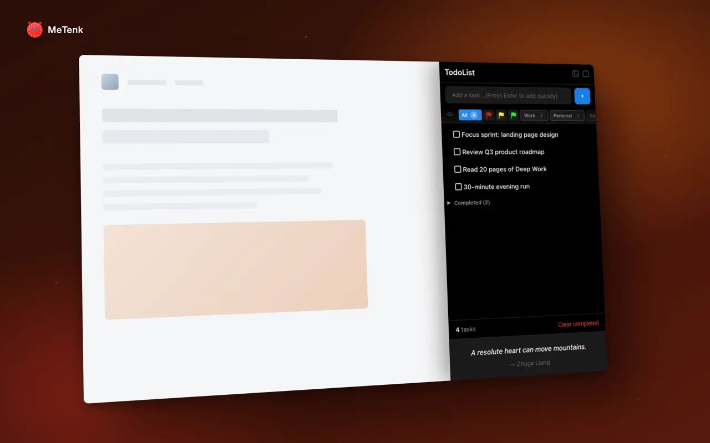

MeTenk
The Ultimate Task Timer Focus · To-Do · Timer · Productivity
Free · No account · Data stays on your device
Pomodoro Timer, To-Do List & Focus Stats
One lightweight extension for Chrome, Edge and Firefox. Plan your tasks, run focus sessions, and review your statistics — all data stays on your device.
Pomodoro Focus Timer
Start a classic 25/5 Pomodoro session or set your own focus and break lengths. A circular ring shows the current phase and the time remaining at a glance.
To-Do List & Tasks
Create, reorder, and complete tasks with drag and drop. Attach any to-do item to a focus session so planning and timing happen in one place.
Focus Statistics
Daily and weekly charts break down focus minutes, completed sessions, and finished tasks, so you can see exactly where your time goes.
Privacy First
No account, no cloud sync, no tracking of your tasks. Every to-do item and focus record is stored in your browser's local storage on your own device.
Focus Reminders
Gentle break reminders and motivating quotes keep your rhythm sustainable, so deep work never turns into burnout.
Themes & Multi-language
Switch between classic blue, silver, and dark themes. Use the extension in English, Chinese, Spanish, Arabic, and more — it follows your browser language automatically.
